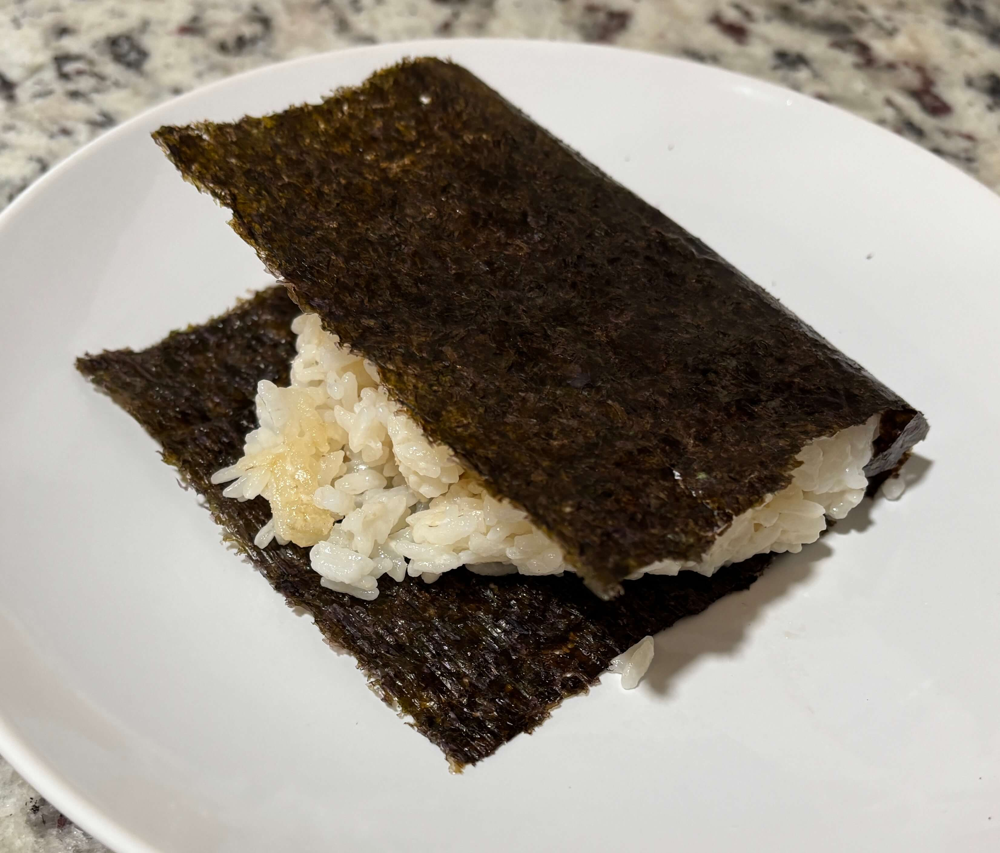

Home
Onigiri

9 servings
Ingredients
- 2 cups dry short-grain/sushi rice (yields 6 cup cooked)
- 1 tsp sesame oil
- salt
- 1 can drained tuna
- 3 tbsp mayo divided
- Sirachia with the mayo for spice
- Squeeze of lemon
- 3-4 finely chopped sticks imitation crab
- Garlic powder or old bay
- 1 drained pouch/can salmon
- 1 tsp soy sauce
- 1 tsp honey
- 5 nori cut in half
Steps
- Rinse 1 cup dry short-grain/sushi rice until clear. Cook the rice with a 1:1.1 ratio of water. While the rice is still warm, gently fold in 1 tbsp kewpie (or regular) mayo, 1 tsp sesame oil, and 1 tsp salt. This coats the grain to prevent them from hardening in the fridge.
- In three small bowl mix together the fillings. In a small bowl mix together 1 can drained tuna, 1 tbsp mayo, and a squeeze of lemon. In a different small bowl mix together 3-4 sticks of imitation crab finely chopped, 1 tbsp mayo, and garlic powder or old bay. In a seperate small bowl mix together 1 drained pouch/can salmon, 1 tsp soy sauce, and 1 tsp honey.
- Let the rice cool until you can handle it comfortably, but do not let it get cold before shaping.
- Set out a bowl of water and a small pile of salt. Wet your hands and rub a pinch of salt on your damp palms to prevent sticking
- Scoop about 1/3 cup of rice onto seran wrap. Create a small indent in the middle. Place 1-2 tsp of your chosen filling into the indent. Fold the rice over on itself using the seran wrap.
- Cup your hands to form a triangle. Squeeze firmly but gently so that it is compressed enough to hold but not mashed
- Put nori on the outside of it and wrap each one tightly in plastic wrap immediately
Tips
- The rice is best for 3 days so make enough filling for the week but make more rice halfway through the week if you want more onigiri